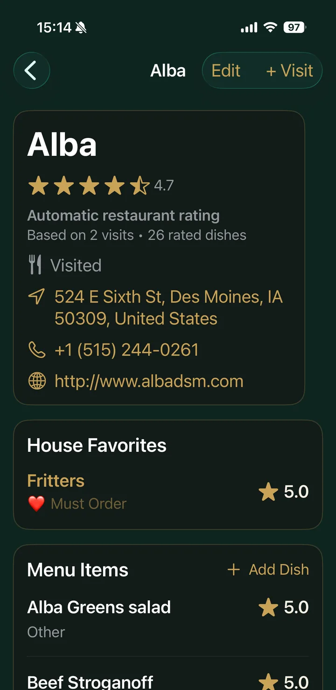
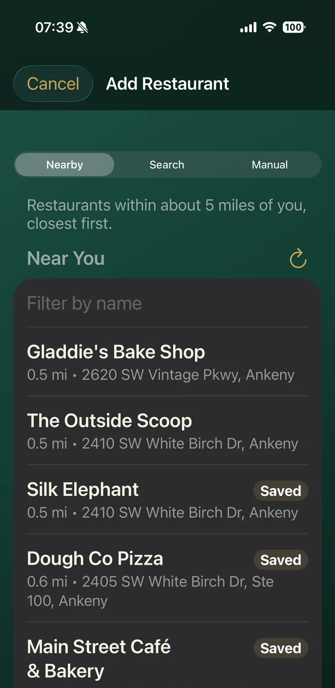
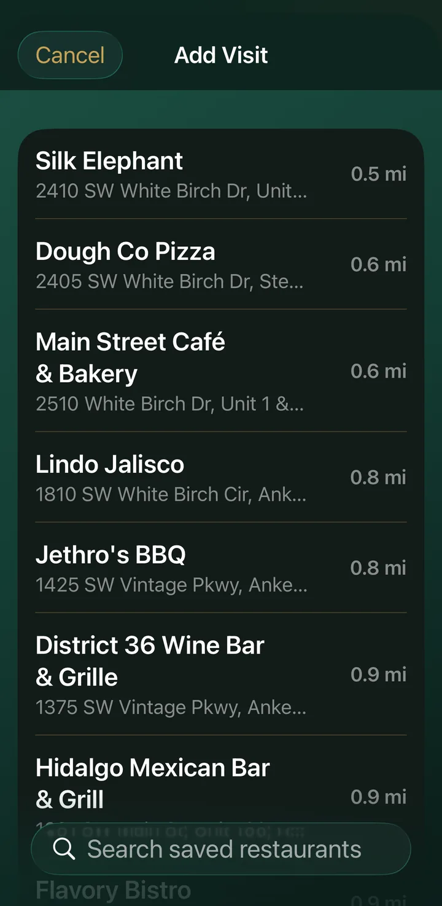
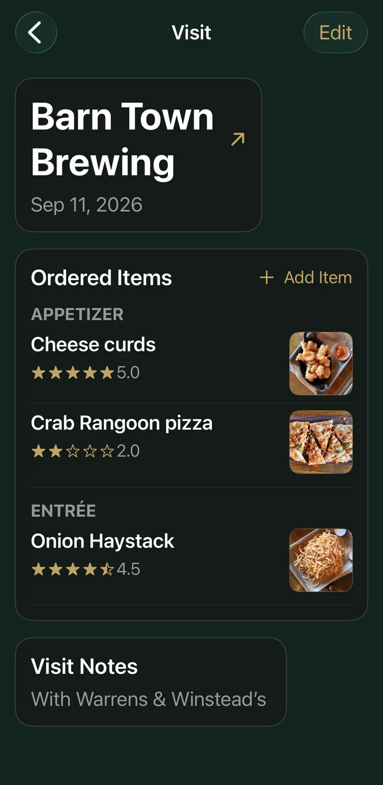
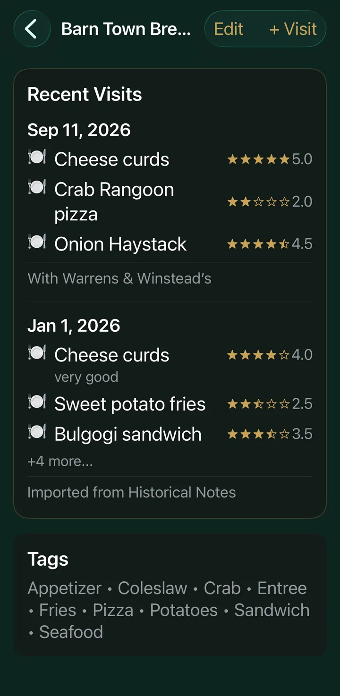
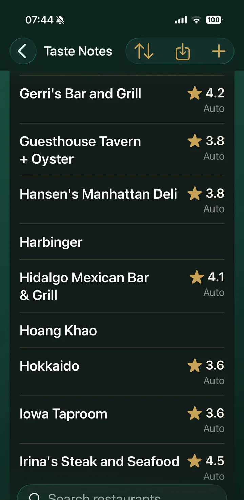
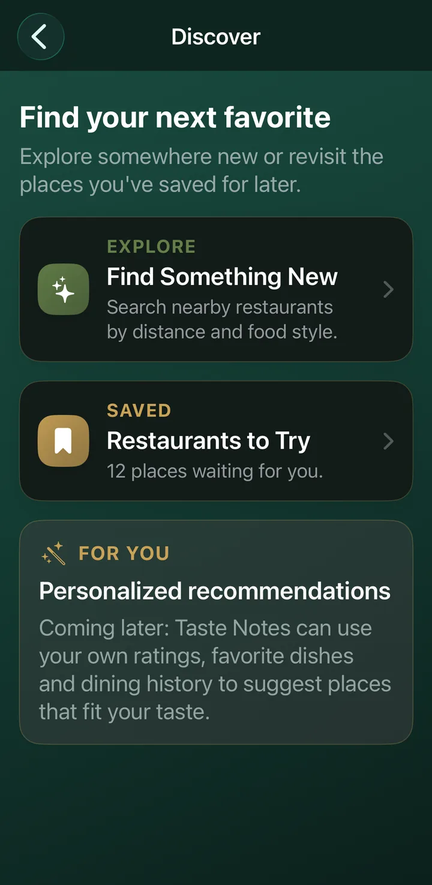

Free
$0
Up to 10 restaurants
- Restaurants, visits and dish ratings
- Photos, tags and search
- Backup and restore
A dining journal for iPhone
Taste Notes keeps your restaurant history down to the dish. What you ordered, how you rated it, and what to get next time.
iPhone only at launch. Your notes stay on your phone.

Why Taste Notes
What did I get here last time?
Every visit keeps the dishes you ordered, who you were with, and your notes.
Was that pizza any good?
Rate each dish in half stars. Your favorites rise to the top of the restaurant page.
Where should we eat tonight?
Plan by craving, distance and who's coming, using places you've already rated.
How it works

Import it from Apple Maps with the address, phone and website filled in. Mark it Want to Try or Visited.

Pick the restaurant from your list, sorted by how close you are right now.

Add each dish with a half-star rating, a photo and a note like "ask for extra sauce."
Next time, House Favorites and Must Order dishes are waiting at the top of the page.
Dish-level memory
Taste Notes builds each restaurant's score from the dishes you've rated there, so a great burger and a forgettable salad both count.

Your whole list
Sort and search your restaurants, see the rating at a glance, and keep notes like veteran discounts where you'll see them.

Discover and plan
Find Something New searches Apple Maps near you, or near a hotel when you're traveling, and hides places you've already saved.

Also in the app
Snap the plate, then crop and rotate it before you save.
Tag dishes and restaurants. A restaurant picks up the tags of the dishes you've had there.
Import restaurant details and open directions in one tap.
Choose Bistro, a deep green and brass, or Rose, a warm blush.
Save a full backup file whenever you like and restore it on the same or a new phone.
No account and no ads. Your notes live on your iPhone.
Pricing
Pay once for the app on your phone. A subscription is planned only for services that cost money to run, like cloud sync.
Up to 10 restaurants
One-time purchase
Subscription
Prices and plan limits are still being finalized. The App Store listing will always show the current price before you buy.
Coming later
These are planned. None of them are in the first release.
Your notes on every phone and tablet you use.
Taste Notes for Android phones.
Photograph a menu and turn it into dishes you can rate.
Suggestions based on the dishes you rate highest.
Questions
No. Open the app and start adding restaurants. There's no sign-up.
On your iPhone. Taste Notes doesn't send your restaurants, ratings or photos to us. You can save a backup file any time from Settings.
To sort your saved restaurants by distance and to search Apple Maps for places nearby. It's only used while the app is open, and you can say no and still use everything else.
Yes. Create a backup in Settings, move the file to your new phone, and restore it there.
Not yet. Taste Notes launches on iPhone first. Android is on the roadmap.
There will be a free version and a one-time Lifetime unlock. Final prices will be on this page and in the App Store at launch.